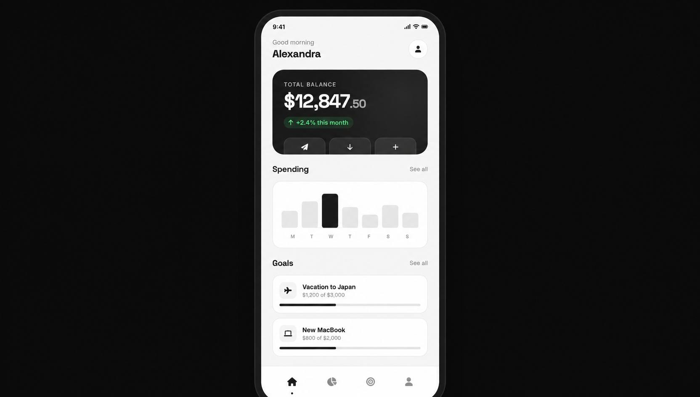

Digital Banking Platform
A modern banking experience focused on financial wellness and user empowerment — designed to help people take control of their money.
View live demo
Project Overview
Digital Banking Platform is a comprehensive financial management solution designed to help users take control of their finances. The project aimed to create an intuitive, accessible, and engaging banking experience that empowers users to make better financial decisions.
Problem
Traditional banking apps are often complex, overwhelming, and fail to provide users with meaningful insights about their financial health. Users struggle with understanding their spending patterns, setting and tracking financial goals, managing multiple accounts, and feeling in control of their financial future.
- Unclear spending patterns
- Difficult goal setting and tracking
- Multiple accounts across different banks
- No sense of control over finances
Research & Discovery
I analyzed leading banking apps and studied common user frustrations. The research focused on understanding why people abandon financial apps and what would make them stay.
Competitive Analysis
Reviewed 10+ banking apps
User Feedback
Analyzed reviews and complaints
Pattern Research
Identified common UI/UX patterns
Ideation
Explored features that add real value
Key Insights
- Users want to see their financial health at a glance
- Goal setting and tracking is a major pain point
- Automated categorization of expenses is highly valued
- Users prefer simple, clear visualizations
Design Process
Information Architecture
Structured the app's content and features based on user needs and mental models.
Wireframing
Created low-fidelity wireframes to test layout and functionality.
Visual Design
Built a modern, clean visual language focused on readability and accessibility.
Prototyping
Built interactive prototype to test user flows and gather feedback.
Development
Implemented the design using modern web technologies (HTML/CSS/JS).
Solution
The final product is a comprehensive banking platform that combines intuitive design with powerful features:
Dashboard
Financial overview with key metrics and insights
Spending Analysis
Visual breakdown of expenses by category
Goal Tracking
Set and track financial goals with progress indicators
Smart Notifications
Personalized alerts and recommendations
Results & Impact
"A clean, modern banking concept — designed and built from scratch."— Project Reflection
Lessons Learned
- Research is crucial for understanding real needs
- Simple visualizations are more effective than complex ones
- Accessibility should be built in from the start
- Continuous testing with users leads to better outcomes